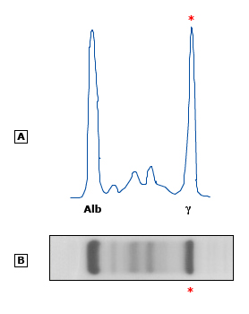

Monoclonal pattern on serum protein electrophoresis (SPEP)

(A) Densitometer tracing of these findings reveals a tall, narrow-based peak (asterisk) of gamma mobility and has been likened to a church spire. The monoclonal band has a densitometric appearance similar to that of albumin (alb) and a reduction in the normal polyclonal gamma band. (B) A dense, localized band (asterisk) representing a monoclonal protein of gamma mobility is seen on SPEP on agarose gel (anode on left).